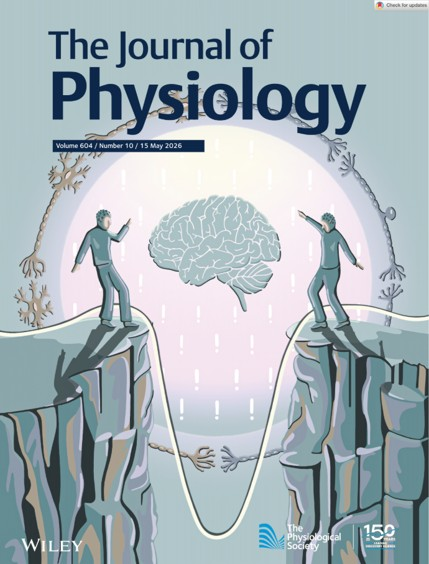

Hi! My name is Daphne. I study individual differences in residual visual abilities following brain lesions.
I have a background in Biology (BSc), Neuroscience (Research MSc) and Philosophy (MA), obtained at various universities in the Netherlands. Throughout my studies, I received hands-on training in neuroimaging (fMRI, DTI) and (neuro)physiology (EEG, EMG).
I’m interested in the functional roles of neural signals and the relationship between body, brain and mind, from both an empirical and a philosophical-scientific perspective. I also value open discussions about scientific integrity and research culture in academia.
In my free time, I like to be creative with visual arts, bake, travel to new places and listen to music.
Background
- 2026 – presentPhD in Neuroscience, Università di Firenze, Italy
- 2023 – 2025MA Philosophy, Vrije Universiteit Amsterdam, the Netherlands
- 2022 – 2024Research MSc Neuroscience, Erasmus Universiteit Rotterdam, the Netherlands
- 2019 – 2022BSc Biology, Universiteit Leiden, the Netherlands
PhD project
My project investigates the variability in clinical outcomes following brain lesions. In the part of the visual field affected by the lesion, some individuals remain blind, while others can locate or discriminate stimuli they are not consciously aware of, a phenomenon known as blindsight.
With advanced brain imaging techniques (7T laminar MRI), I study how the preserved primary visual cortex (V1) and extrastriate regions reorganize, and how they remain connected to subcortical structures that relay visual information. Understanding how this effective connectivity changes with lesion location between individuals could help inform more personalized rehabilitation strategies.
The project is part of IndiBrain, a European doctoral network of universities that trains doctoral candidates in neuroimaging, computational neuroscience and AI to advance personalized care for neurological and visual disorders.
Publications
Cortical responses to balance perturbations persist without active postural control
Editor’s Choice Cover of the issue
This paper was discussed in the perspective article “The balance N1: a double-edged sword?” in the same journal.

Talks & events
- November 2026 · PresentationIndiBrain network workshop in Coimbra, Portugal.
I gave a presentation about my background and my project to the whole IndiBrain consortium. - June 2026 · InterviewPHYSIOLOGY SHORTS: Cortical responses to balance perturbations persist without postural control
The Physiological Society YouTube Channel. - June 2024 · Poster presentationThe cortical balance N1 potential is evoked independent of active balance engagement
Dutch Neuroscience Meeting, Tiel, the Netherlands. Jansen, D. N. R., Mensink, L., Leeuwis, M., & Forbes, P. A. - April 2024 · Poster presentationThe functional role of the cortical N1 response in balance control
Synapsium Symposium, Donders Institute, Nijmegen, the Netherlands. Jansen, D. N. R., Mensink, L., Leeuwis, M., & Forbes, P. A.
Previous research projects
MRI operator and DTI analysis
I worked as an MRI operator at the Sophia Children’s Hospital and developing a Diffusion Tensor Imaging (DTI) analysis pipeline for white matter tractography from the cerebellum to the cortex.
Embodiment of prosthetics
My project studies phenomenology, embodiment and body representations in the context of prosthetic limb use. I ask: “Are prosthetic limbs embodied in the brain the same way as biological limbs?” and “Should prosthetic limbs be embodied in the brain in the same way as biological limbs?”
Cortical responses to balance perturbations
We performed behavioral experiments on a human-in-the-loop robotic simulator and measured EEG (event-related potentials and time-frequency) and EMG data of lower leg muscles to study cortical responses to balance perturbations.
Social neuropsychology in children and adolescents
I collected fMRI data from children and young adults to study cognitive and affective processes and how they develop throughout age.
Contact
I am happy to discuss my work, passions and ideas further with you. Feel free to reach out by email: daphne1557@gmail.com.